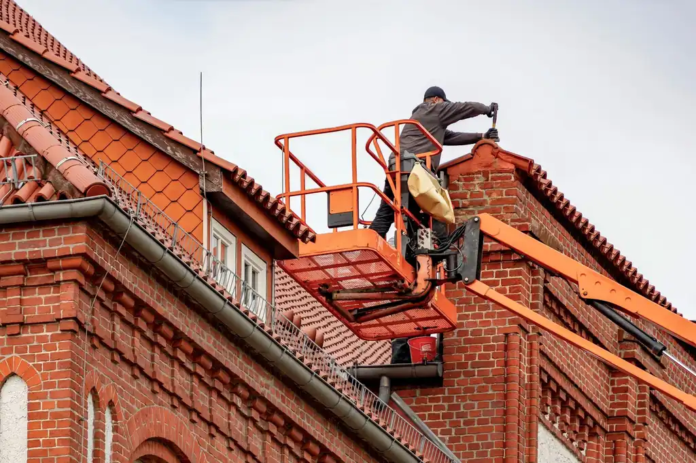

Focused arrival windows
Useful updates and clear arrival timing.

Attic Ventilation Solutions Panama City FL are essential for maintaining a healthy home environment. Proper ventilation helps regulate temperature and moisture levels, preventing mold and heat buildup. If you're in Panama City, FL, our affordable attic ventilation services can keep your home comfortable year-round.
Useful updates and clear arrival timing.
Review the approach and price before deciding.
Equipped vehicles and respectful cleanup.
Neighbors serving neighbors with follow-through.
Our attic ventilation solutions encompass a range of services designed to improve airflow and energy efficiency in your home. We focus on providing comprehensive solutions tailored to your specific needs.
We conduct a thorough assessment of your attic to determine the best ventilation options for your home.
Our team installs high-quality ventilation systems, including ridge vents and soffit vents, ensuring optimal airflow.
We perform a final inspection to ensure all systems are functioning properly and meet local building codes.
We provide you with maintenance tips to keep your ventilation system operating efficiently for years to come.
Share what is happening and receive a clear next step from the local team.
Attic Ventilation Solutions Panama City FL involve the installation of systems designed to enhance airflow in your attic space. These solutions include ridge vents, soffit vents, and powered attic ventilators, which work together to ensure proper air circulation, reducing heat buildup and moisture accumulation.
Homeowners in Panama City need effective attic ventilation to combat the region's humid climate. Without it, issues like mold growth and roof leaks can arise, leading to costly repairs. Our team provides the best attic ventilation solutions in Panama City, ensuring your home remains safe and energy-efficient.

We begin with a thorough assessment of your attic space to determine the best ventilation solutions for your home. This typically takes about an hour.
After the assessment, we create a tailored ventilation plan that meets your specific needs, ensuring optimal airflow and energy efficiency.
We work with you to schedule a convenient installation date, typically within one week of your consultation, to minimize disruption.
Our licensed attic ventilation contractors in Panama City will install the chosen ventilation systems using high-quality materials, ensuring compliance with Florida Building Code standards.
Once the installation is complete, we conduct a final inspection to ensure everything is functioning correctly and provide maintenance tips to keep your system in top shape.

Used for securing ventilation components to the roof structure, ensuring durability.
Installed to allow cool air to enter the attic, promoting balanced airflow.
Helps actively remove hot air from the attic, especially beneficial during hot months.
Ensures safety for our crew while working on roofs during installation.
We evaluate the current airflow in your attic to determine the most effective ventilation solutions.
We follow best practices for installing ventilation systems, ensuring compliance with Florida Building Code.
We recommend routine checks of your ventilation systems to ensure optimal performance and longevity.

We install powered attic ventilators to actively remove humid air, improving your attic's environment. This reduces the risk of mold growth and lowers your cooling costs.
Our team assesses your attic ventilation and recommends the best solutions to enhance airflow. Effective ventilation can lead to a noticeable decrease in energy costs.
We evaluate your ventilation system to ensure it's working properly and address any issues. This proactive approach helps prevent further damage and costly repairs.
In Panama City, our attic ventilation solutions take into account the local climate, which is characterized by high humidity and heat. Proper ventilation is critical to preventing issues like mold growth and roof leaks, which are common in our area. Our team uses materials compliant with Florida Building Code, ensuring that installations are safe and effective. We understand the unique challenges posed by the coastal environment, and our solutions are designed to withstand these conditions while providing optimal airflow.
Homes here often face humidity issues, making effective attic ventilation essential.
Local homes benefit from ventilation solutions that prevent heat buildup and protect roofing materials.
Attic ventilation is crucial in this area to combat moisture and maintain indoor comfort.
Leads to increased risk of mold and roof damage if not properly addressed.
Can exacerbate moisture issues in attics, making ventilation systems even more critical.
The attic was excessively hot, leading to discomfort and high energy bills. Mold was also starting to appear due to trapped moisture.
After installing a new ventilation system, the attic temperature decreased by 15 degrees, and mold growth was eliminated.
Maintenance: Regular checks of the ventilation system every six months keep it functioning effectively.
Homeowners reported leaks after heavy rains, attributed to poor attic ventilation and condensation.
Post-installation, the leaks were resolved, and the attic remained dry even during storms.
Maintenance: Annual inspections help ensure the ventilation system remains clear and effective.
The homeowner faced soaring energy costs during summer due to heat buildup in the attic.
With the new ventilation system, energy bills dropped by 25%, and the home was noticeably cooler.
Maintenance: Routine maintenance checks every year ensure long-term savings and comfort.
Attic ventilation solutions address several critical issues that homeowners face in Panama City.
This can lead to increased energy bills and discomfort in your home. Our attic ventilation systems effectively reduce heat buildup, keeping your home cooler and more comfortable.
High moisture levels can cause serious health issues and damage to your home. By improving airflow, our solutions help prevent mold and mildew, protecting your family's health.
Poor ventilation can lead to condensation and leaks, resulting in costly repairs. Our ventilation systems minimize condensation, helping to prevent roof leaks and extend the lifespan of your roof.
$300 - $1,200 depending on scope
The cost of attic ventilation solutions in Panama City can vary based on several factors, including the type of system installed and the size of your attic. Typically, pricing ranges from $300 to $1,200 in 2026. Factors such as the complexity of installation and specific materials chosen can influence the final cost. Our affordable attic ventilation Panama City services ensure you receive the best value for your investment.
Investing in attic ventilation not only enhances comfort but also protects your home from moisture damage, making it a wise choice for homeowners.
Different systems, like powered ventilators or passive vents, have varying costs.
Larger attics may require more extensive systems, affecting overall pricing.
Difficult access or additional structural work can increase labor costs.
High-quality materials from brands like GAF and Owens Corning can impact pricing.
With over 15 years of experience in the roofing industry, our team specializes in attic ventilation solutions tailored for Panama City homes. We are NRCA Certified and GAF Master Elite contractors, ensuring the highest standards of service.
The advantages of attic ventilation in Panama City include improved energy efficiency, reduced risk of mold growth, and extended roof lifespan. Proper ventilation helps regulate attic temperatures, especially in the humid climate.
Attic ventilation installation typically takes 4 to 8 hours, depending on the complexity of the project and the number of ventilation units being installed.
We offer various attic ventilation solutions in Panama City, including ridge vents, soffit vents, and powered attic ventilators to suit different home designs and needs.
The cost of attic ventilation solutions in Panama City typically ranges from $300 to $1,200, depending on the size of your attic and the type of ventilation system installed.
Not seeing your question? Our local team can help you understand urgency, scheduling and what to expect.
Ask the local team
Our roof installation services complement attic ventilation solutions by ensuring your roof is properly sealed and ventilated, enhancing overall energy efficiency.
View service
When replacing your roof, integrating attic ventilation solutions ensures your new roofing system performs optimally, preventing future issues.
View service
Roof repair services often include assessing ventilation issues, making our attic ventilation solutions a crucial part of maintaining roof integrity.
View service
Regular roof inspections can identify ventilation problems early, allowing us to recommend the best attic ventilation solutions before they escalate.
View service
We invite you to reach out for any roofing needs. Our team is available to assist you promptly, ensuring a quick response.